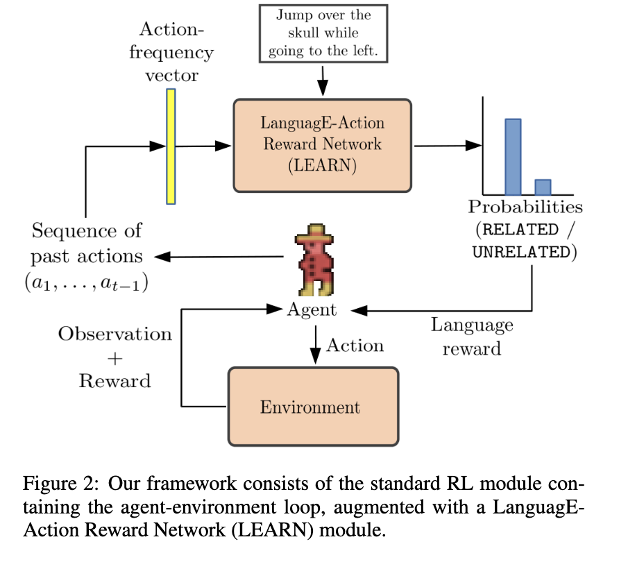
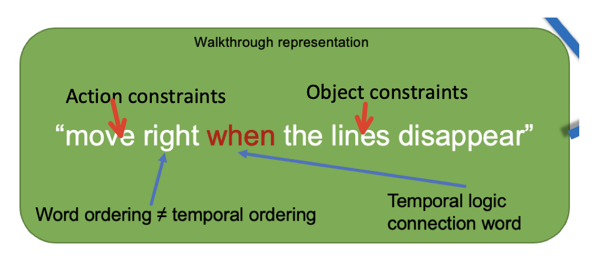
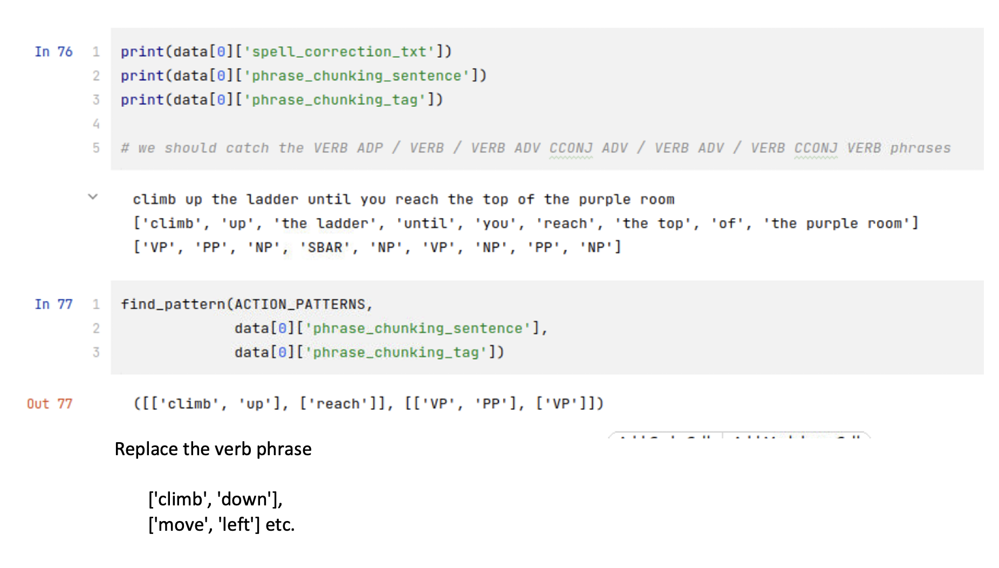

You need password to access to the content, go to Slack *#phdsukai to find more.
Part of this article is encrypted with password:
[TOC]
Existing work#
-
Goyal’s language reward shaping module + PPO RL agent
-

-
Limitation of existing work#
- The Goyal’s model used only sequence of past actions + instruction, and thus can only address the action constraints in the instruction
- However, an instruction can contain either action, object(state) or temporal constraints,
-

-
- and thus the Goyal’s language reward shaping binary classifier cannot handle the others and thus it is inaccurate.
- However, an instruction can contain either action, object(state) or temporal constraints,
- (This issue is specific to Montezuma’s Revenge environment (MR env) ) In MR env, some actions may become invalid in some cases and hence may not give you the expected outcome (e.g., left or right action become invalid when you are on the ladder). Human players can notice this by looking at the game screen but Goyal’s reward shaping module cannot, thus leading to huge error.
- Eventually Goyal’s language reward shaping RL model cannot solve room one in MR env.
Summary of our work#
-
We proposed an advanced language reward shaping module that can make more accurate matched/mismatched prediction
- Specifically, we trained a video autoencoder to encode video data into latent vectors that has smaller dimension but still capture the semantic meaning.
- we used video’s relative offset ($img_t - img_{t-1}$) to predict avatar’s valid actions, this avoids the invalid action issue in MR env.
- Goyal provided about 5000 video and description (matched) pairs as training dataset. But in order to train the language reward binary classifier, we need to create our own negatives samples. On top of the in-batch negatives, we used phrase replacement method on both the verb phrases and noun phrases to create hard negatives.
-

-
- (Not our main focus) we used image augmentation and also change of the video speed method on the video data to increase the robustness of the video encoding model
- In the end we used a Transformer architecture that applies cross attention between the sentence embeddings, sequence of image embeddings (video) and sequence of action embeddings -> cross attention can capture the interrelationship of the sequential data and thus can implicitly capture the temporal information
-
In the RL env section, we experimented different settings of how the instructions are given to the RL agent
- Specificity: specific vs. vague instructions
- e.g., “Climb down the middle ladder to the conveyor belt and jump right to the yellow rope on the right of the screen” vs “Move to the platform, then move to the rope”
- Composition of goals and time coverage: single goal vs. composition of multi goals so one can cover 1 sec vs one can cover 3 secs) (3 sec is the length of video in Goyal’s training dataset)
- e.g., “Go down the ladder” and “jump right on the yellow string” two separate single-goal instructions, each covers about 1 sec vs. “Go down the ladder and jump right on the yellow string” one composition of multiple goals and can cover 3 secs
- Missing of intermediate steps
- e.g., [ “Go down the middle ladder”, “Jump right to the rope”, “climb down the right ladder”] vs. [ “Go down the middle ladder”, “climb down the right ladder”]
- Specificity: specific vs. vague instructions
-
Some changes to prevent agent from repeatedly get language rewards form the same instruction
- Change immediate language reward formula to $immediate_rew_{t} = lang_rew(obs_t, sentence ) - \max(lang_rew_history)$
- Intrinsic reward when encountering unseen state.
-
We also tested different strictness level for the binary classifier to give reward
- Strictness (confidence threshold): the reward module only gives reward when its prediction probability is above a certain value.
- E.g., if we set confidence threshold to be 70%, it means that the language reward module only gives reward when the prediction probability of being matched is greater than 0.7
- We found that the RL agent is very sensitive to this hyper-parameter.
Our contribution#
- We proposed a language reward shaping model that can address the action, object and temporal constraints in the walkthrough instructions. And finally make the language reward shaping method practical for helping to solve complex tasks such as MR’s room one.
- We proposed the phrase replacement method to create hard negatives training data and make the model more effective in handling action and object constraints.
- And this method seems to fit more naturally than other hard negative generation methods (e.g., top K retrieval) in this language reward shaping circumstance. It is because this method creates the hard negatives of action and object constraints in the instructions. Moreover, this also alleviates the data scarcity issue and also decrease the possibility of generating false negatives compared to Top-K retrieval method.
- Although there are works on using language reward shaping methods to solve AI problems, non attempted to measure the impact of different settings of walkthrough instructions on the language reward shaping agent. How does the agent performance influenced by 1) the specificity of the instructions, 2) the length and quantity of the instruction sentences. 3) the strictness of the language reward module? Understanding this can better help us to utilise language reward shaping method practically.
Result*#
Those results are not strong enough, more experiments needs to be conducted to confirm the results
-
our improvements on the language reward shaping module eventually leads to the accuracy increase of the mismatched/matched binary classification prediction
- we still need a better validation dataset for this (I can create this by hand)
- Also I am not satisfy with the current performance of the language reward shaping module (see the result from the report, we can continue to improve the module by
- Having object detection module
- Other pre-training and training method to improve accuracy stated in the report
-
In general for the RL section, we found out that
- an inappropriate configuration may cause the RL agent to fall into local minima and cannot solve the problem, these local minima are contributed by the error from the language reward module
- With the use of language reward shaping, it may postpone the first time the agent reach the goal (i.e., get the key and escape from room one) because to some extent the language reward prevent agent from exploring more.
- Nevertheless it appears that the language reward shaping method can help the agent to increase the frequency of getting out of the first room.
-
In terms of different settings of walkthrough instruction
- the specificity of the instructions,
- false positive and false negative gets high when we make the instruction too specific
- vague instructions are more preferred when you have limited training dataset and also the vague instruction works a hint and the agent can find the way by itself by exploration.
- the length and quantity of the instruction sentences.
- Increasing the quantity of the instruction sentence may make the training unstable due to the error accumulation from the language reward shaping module.
- but having more specific instruction may help the agent to reach the goal earlier, but after that the agent may fall into the local minima very quickly.
- Length (composition of multiple goals): It seems better if we can let the instruction to have suitable amount of goals that can cover the same time duration in the training dataset.
- the strictness of the language reward module
- it turns out that if we decrease the strictness level, the agent may easily fall into the local minima, the agent can easily learn unexpected tricks to maximise the language reward and then the language reward prevents agent from exploring more. Thus it may lead to worse performance compared to a vanilla RL agent.
- the specificity of the instructions,
Future work#
- Connectionist Temporal Classification (CTC)
- handle temporal constraints -> help to recognise when the event start and end -> our current model is bad at telling this.
- change the style of reward shaping module – from binary classifier to video - text generator
- help interpretability of the model (BTW, this is what I really want to do next because I just do not know why sometimes the model cannot recognise some instructions and sometimes it is too confident to some instructions)